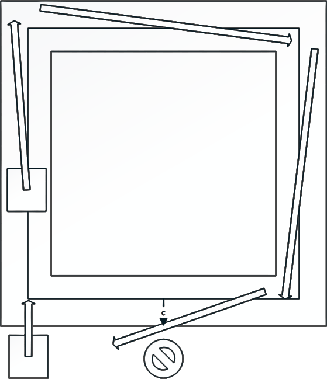
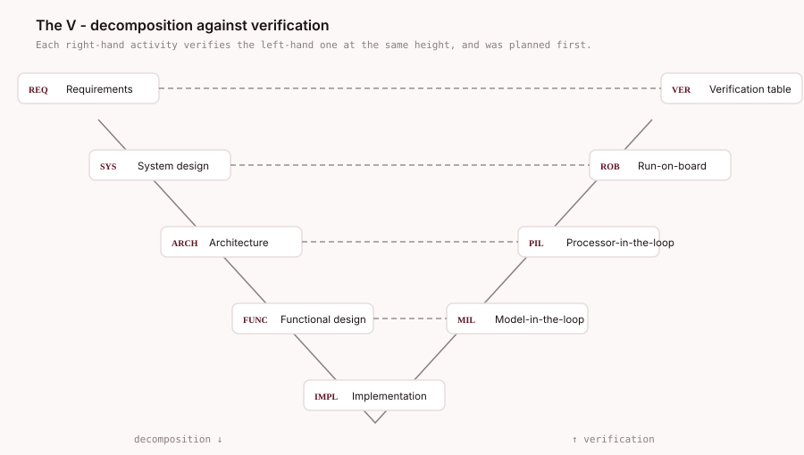
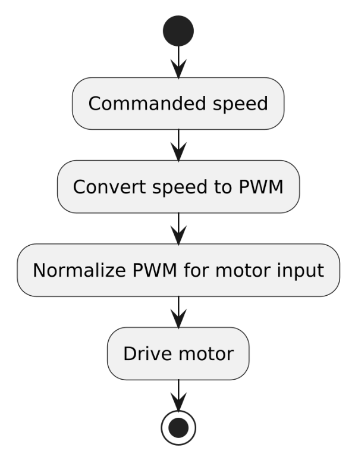
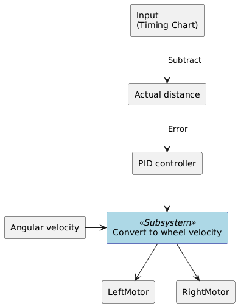

Build detail · every stage, in order
Every stage of the build, in the order it happened
A supervisory controls stack for a microcontroller-based concept car, taken end-to-end through the software V-model — requirements, architecture, model-in-the-loop, processor-in-the-loop, run-on-board — to show what a formal embedded software process actually costs and produces.
01 — Premise
Automotive software is safety-critical and under-taught
Mechanical engineers moving into software-defined vehicles inherit a discipline nobody handed them a process for. This project treats that gap as the actual problem: not "can a rover follow a line," but "what does the full formal path from requirement to flashed binary look like, and where does it break?"
The deliverable is a concept car — an Arduino Nano 33 IoT on a MotorCarrier board, driving DC motors with wheel-speed encoder feedback through a PID controller — developed in both virtual and physical form and verified against written acceptance criteria at every stage.
The engineering claim is the process, not the vehicle. Every artifact a production automotive team would be asked for was produced: a requirements specification with traceable IDs, a layered architecture decomposition, UML block and class diagrams, a plant model derived from kinematics, three distinct test stages, and a verification table closing each requirement.


02 — Process
The V-model, executed by hand
Each design activity on the left arm was bound to a verification activity on the right arm before implementation started. I mapped a specific tool to every box — this figure is the reason the project is worth rerunning, because each right-hand box is a job that a CI system could run and nobody was running.

Design — descending
REQRequirements engineering — classified, ID-tagged, constraint-boundSYSSystem design — plant equations, kinematics, variable setARCHSoftware architecture — layered decomposition, UMLFUNCFunctional design — motor curve, controller structureIMPLImplementation — Simulink models, generated CTest — ascending
MILModel-in-the-Loop — plant and controller in simulationPILProcessor-in-the-Loop — generated C on target, host-tetheredROBRun-on-Board — untethered, physical trackVEREvaluation — per-stage verification and validationVERVerification table — requirements closed or not03 — Requirements
Traceable IDs, constraints written down
Requirements were classified functional or non-functional, tagged SR for "software requirement" so a mixed mechanical/software artifact stays filterable, and layered as system, component, or software level. Constraints — including licensing and toolchain limits — were recorded alongside the requirement rather than discovered later.
| ID | Requirement | Acceptance criterion | Level |
|---|---|---|---|
| SR-F-01 | System modelling in MATLAB / Simulink | Create and simulate dynamic models spanning ≥10 mechanical and electrical component types | System |
| SR-F-02 | PID control for motor position | Hold motor position within ±1° | Component |
| SR-F-03 | Simulink ↔ Arduino support package compatibility | Locate Arduino block library and compile for target | System |
| SR-F-04 | Follow a prescribed path in simulation | Desired versus simulated concept-car behaviour match within ±1% | Software |
| SR-F-05 | Text-based programming in MATLAB | Support ≥100 custom functions and scripts | System |
| SR-F-06 | Visual programming in Simulink | ≥50 pre-built blocks plus custom block creation | System |
| SR-F-07 | Apply signal filtering to sensor input | Handle noisy encoder feedback within the simulation host's capability | Software |
Extract of the full specification (Table 7). The complete table, including non-functional requirements and per-row constraints, ships in the repository as the source spreadsheet.
A MATLAB release update moved a folder on the critical path and silently broke the link to the Arduino support library. Several days of debugging with MathWorks support produced a requirement that had never been written down: the Arduino library and the Simulink library must remain compatible for the duration of the project. Toolchain version pinning is not an implementation detail — it is a requirement, and it surfaced only because something broke.
04 — Design
Decomposition, kinematics, architecture
The design was decomposed iteratively — an initial split, then a layered redecomposition — before any model was drawn. Differential-drive kinematics were derived into a plant model with a documented variable set, and a DC gear motor was characterised experimentally to give the controller a real response curve to work against.


Motor characterisation
Rather than assume a transfer function, the motor was driven across its PWM range and its response recorded, producing the curve the controller was later tuned against. The characterisation scripts and captured response data are in the repository.

motorResponse data, not traced.Where the software boundary sits
The controller does not talk to the motors directly. The Nano is I²C master to a co-processor on the MotorCarrier board that runs the motor loop, so part of the control problem is deciding what belongs above that bus and what belongs below it. Everything above it is the work described here; everything below it is a vendor device with a fixed interface.

Below the bus the interface is fixed by someone else, which makes reading it part of the design work rather than an afterthought. The dependency was documented as a class diagram before any control model was built, so the constraints it imposes — fixed-point gain types, a control loop running on the co-processor's own schedule, encoder counts rather than angles — were known while the architecture was still movable.

UML and SysML
Interfaces were captured as UML rather than described in prose, and the diagrams were written as PlantUML source so they live in version control as text instead of as a binary drawing. Three of the diagrams and their source are reproduced below.
The model-in-the-loop pipeline as three stereotyped rectangles — signal creation, kinematics, visualisation. Deliberately coarse: this is the diagram that fixes the boundaries before any block is placed.
@startuml skinparam rectangle { BackgroundColor<<Input>> White BackgroundColor<<Calculation>> White BackgroundColor<<Visualization>> White Dimension 300x200 } rectangle "Create velocity and angular velocity signals" <<Input>> as input rectangle "Vehicle Kinematics" <<Calculation>> as calculation rectangle "Visualization of the simulated path" <<Visualization>> as visualization input -right-> calculation calculation -right-> visualization @enduml
The encoder chain, as classes. A wheel-speed signal is integrated over time into an angular position in degrees — the quantity the position controller actually closes on.
%UML Source code for Encoder UML diagram @startuml !define RECTANGLE class RECTANGLE WheelSpeed { +input: inherit auto } RECTANGLE DiscreteTimeIntegrator { +integrate(input: inherit auto): inherit auto } RECTANGLE Degrees { +output: inherit auto } WheelSpeed --> DiscreteTimeIntegrator : input DiscreteTimeIntegrator --> Degrees : output @enduml

The closed-loop distance controller. Setpoint from the timing chart, subtract measured distance, error into the PID, output converted to per-wheel velocity and split across the two motors. Angular velocity enters as a separate input to the conversion so heading and distance stay independently commandable.
Source code for distanceClosedloop_hw diagram @startuml skinparam rectangle { BackgroundColor<<Subsystem>> LightBlue BorderColor<<Subsystem>> DarkBlue } rectangle "Input\n(Timing Chart)" as input rectangle "Actual distance" as actualDistance rectangle "PID controller" as pidController rectangle "Angular velocity" as angularVelocity rectangle "Convert to wheel velocity" <<Subsystem>> as convertToWheelVelocity rectangle "LeftMotor" as leftMotor rectangle "RightMotor" as rightMotor input -down-> actualDistance : Subtract actualDistance -down-> pidController : Error pidController -down-> convertToWheelVelocity angularVelocity -right-> convertToWheelVelocity convertToWheelVelocity -down-> leftMotor convertToWheelVelocity -down-> rightMotor @enduml
